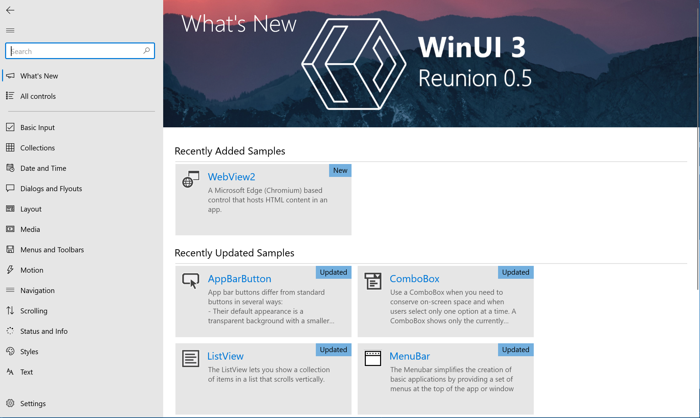

WinUI 3 - Project Reunion 0.5 Preview (March 2021) release notes
WinUI 3 is a native user experience (UX) platform for building modern Windows apps. This preview of WinUI 3 works with both desktop/Win32 and UWP apps, and includes Visual Studio project templates to help get started building apps with a WinUI-based user interface as well as a NuGet package that contains the WinUI libraries.
WinUI 3 - Project Reunion 0.5 Preview is the first release of WinUI 3 where it is provided as a part of the Project Reunion package (now called the Windows App SDK). Alongside that change, this preview release contains critical bug fixes, increased stability, and a few other general improvements (see Capabilities introduced in WinUI 3 - Project Reunion 0.5 Preview).
Important
This WinUI 3 preview is intended for early evaluation and to gather feedback from the developer community. It should NOT be used for production apps.
Please use the WinUI GitHub repo to provide feedback and log suggestions and issues.
Note
Project Reunion is the previous code name for the Windows App SDK. This documentation still uses Project Reunion when referring to previous releases that used this code name.
Install WinUI 3 - Project Reunion 0.5 Preview
This version of WinUI 3 is available as part of the Project Reunion 0.5 Preview.
To install, follow the directions found in Install tools for preview and experimental channels of the Windows App SDK.
In contrast to past preview versions of WinUI 3, you'll download a Project Reunion VSIX package instead of a WinUI VSIX package. The Project Reunion VSIX includes WinUI 3 templates in Visual Studio that you'll use to build your WinUI 3 app. Once you've completed your installation, the experience of developing a WinUI 3 app should not change.
Note
You can also clone and build the WinUI 3 Preview version of the XAML Controls Gallery.
Note
To use WinUI 3 tooling such as Live Visual Tree, Hot Reload, and Live Property Explorer, you must enable WinUI 3 tooling with Visual Studio Preview Features as described in the instructions here.
Once you've set up your development environment, see WinUI 3 templates in Visual Studio to familiarize yourself with the available Visual Studio Project and Item templates.
For more information about getting started with the WinUI project templates, see the following articles:
Aside from the limitations and known issues, building an app using the WinUI projects is similar to building a UWP app with XAML and WinUI 2. Therefore, most of the guidance documentation for UWP apps and the Windows.UI WinRT namespaces in the Windows SDK is applicable.
WinUI 3 API reference documentation is available here: WinUI 3 API Reference
If you created a project using WinUI 3 Preview 4, you can upgrade your project to use Project Reunion 0.5 Preview.
WebView2
To use WebView2 with this WinUI 3 preview, please download the Evergreen Bootstrapper or Evergreen Standalone Installer found on this page if you don't already have the WebView2 Runtime installed.
Windows Community Toolkit
If you're using the Windows Community Toolkit, download the latest version.
Visual Studio Support
In order to take advantage of the latest tooling features added into WinUI 3 like Hot Reload, Live Visual Tree, and Live Property Explorer, you must use the latest preview version of Visual Studio with the latest WinUI 3 preview and be sure to enable WinUI tooling in Visual Studio Preview Features, as described in the instructions here. The table below shows the compatibility of future versions with WinUI 3 - Project Reunion 0.5 Preview:
| VS Version | WinUI 3 - Project Reunion 0.5 Preview |
|---|---|
| 16.8 RTM | No |
| 16.9 Previews | Yes, with tooling |
| 16.9 RTM | Yes, but no Hot Reload, Live Visual Tree, or Live Property Explorer |
| 16.10 Previews | Yes, with tooling |
Major changes introduced in this release
WinUI 3 now ships as a part of the Project Reunion package, which will also be the mechanism for how our future supported releases will ship.
In-app acrylic is now supported.
The Pivot control is no longer supported, and has been deprecated in WinUI 3. We recommend using the NavigationView control for your in-app navigation scenarios.
WinUI 3 and Project Reunion will only be supported down-level to Windows 10 version 1809 - it requires build 17763 or later.
Preview features are now marked as experimental.
- A preview feature is anything that will continue to be a part of WinUI 3 previews, but will not be a part of the next WinUI 3 supported release.
- Preview features also include any experimental APIs that are a part of the WinUI 2.6 preview.
- When building an app that uses a preview feature, your app will throw a warning.
List of bugs fixed in WinUI 3 - Project Reunion 0.5 Preview
Below is a list of user-facing bugs that the team has fixed since Preview 3. There has also been a lot of work going on surrounding stabilization and improving our testing.
WinUI 3 error message needs rewording: "Cannot resolve 'Windows.metadata'. Please install the Windows Software Development Kit. The Windows SDK is installed with Visual Studio."
App does not respond to theme changes in Windows when selecting Windows Default theme until restarted
Exception on XamlDirect.CreateInstance call
- Thanks to @BorzillaR for filing this issue on GitHub!
ProgressBar doesn't show difference between Paused and Error option
StandardUICommand list view item flyout shows in wrong position.
Crash in desktop XamlControlsGallery when trying to reorder ListView items with touch
- Thanks to @j0shuams for filing this issue on GitHub!
Press and hold on RichTextBlock puts flyout in wrong place
Left/Right arrows aren't moving focus through RadioButtons
- Thanks to @vmadurga for filing this issue on Github!
Narrator remains silent when user hits the down/up arrow keys to select the next/previous month/year/date in DatePicker
NavigationView light-dismiss doesn't work in WinUI 3
New features and capabilities introduced in past WinUI 3 Previews
The following features and capabilities were introduced in WinUI 3 Previews 1-4 and continue to be supported in WinUI 3 - Project Reunion 0.5 Preview.
- Ability to create desktop apps with WinUI, including .NET for Win32 apps
- RadialGradientBrush
- TabView updates
- Dark theme updates
- Improvements and updates to WebView2
- Support for High DPI
- Support for window resizing and moving
- Updated to target more recent version of Edge
- No longer necessary to reference a WebView2-specific Nuget package
- SwapChainPanel
- MRT Core Support
- This makes apps faster and lighter on startup and provides quicker resource lookup.
- Arm64 Support
- Drag and drop inside and outside of apps
- RenderTargetBitmap (currently only XAML content - no SwapChainPanel content)
- Custom cursor support
- Off-thread input
- Improvements to our tooling/developer experience:
- Live Visual Tree, Hot Reload, Live Property Explorer and similar tools
- Intellisense for WinUI 3
- Improvements required for open source migration
- Custom titlebar capabilities: new Window.ExtendsContentIntoTitleBar and Window.SetTitleBar APIs that allow developers to create custom title bars in desktop apps.
- VirtualSurfaceImageSource support
Provide feedback and suggestions
We welcome your feedback in the WinUI GitHub repo.
Limitations and known issues
The WinUI 3 - Project Reunion 0.5 Preview is just that, a preview. The scenarios around desktop apps are especially new. Please expect bugs, limitations, and other issues.
The following items are some of the known issues with WinUI 3 - Project Reunion 0.5 Preview. If you find an issue that isn't listed below, please let us know by contributing to an existing issue or filing a new issue through the WinUI GitHub repo.
Platform and OS support
WinUI 3 - Project Reunion 0.5 Preview is compatible with PCs running the Windows 10 October 2018 Update (version 1809 - build 17763) and newer.
Developer tools
- Only C# and C++/WinRT apps are supported
- Desktop apps support .NET 6 (and later) and C# 9, and must be packaged in an MSIX app
- UWP apps support .NET Native and C# 7.3
- Developer tools and Intellisense may not work properly in Visual Studio.
- No XAML Designer support
- New C++/CX apps are not supported, however, your existing apps will continue to function (please move to C++/WinRT as soon as possible)
- Support for multiple windows in desktop apps is in progress, but not yet complete and stable.
- Please file a bug on our repo if you find new issues or regressions with multi-window behavior.
- Unpackaged desktop deployment is not supported
- When running a desktop app using F5, make sure that you are running the packaging project. Hitting F5 on the app project will run an unpackaged app, which WinUI 3 does not yet support.
Missing Platform Features
- Xbox support
- HoloLens support
- Windowed popups
- More specifically, the
ShouldConstrainToRootBoundsproperty always acts as if it's set totrue, regardless of the property value.
- More specifically, the
- Inking support
- Acrylic
- MediaElement and MediaPlayerElement
- MapControl
- RenderTargetBitmap for SwapChainPanel and non-XAML content
- SwapChainPanel does not support transparency
- Global Reveal uses fallback behavior, a solid brush
- XAML Islands is not supported in this release
- 3rd party ecosystem libraries will not fully function
- IMEs do not work
- CoreWindow, ApplicationView, CoreApplicationView, CoreDispatcher and their dependencies are not supported in desktop apps (see below)
CoreWindow, ApplicationView, CoreApplicationView, and CoreDispatcher in desktop apps
New in Preview 4 and standard going forward, CoreWindow, ApplicationView, CoreApplicationView CoreDispatcher, and their dependencies are not available in desktop apps. For example the Window.Dispatcher property is always null, but the Window.DispatcherQueue property can be used as an alternative.
These APIs only work in UWP apps. In past previews they've partially worked in desktop apps as well, but in Preview4 they've been fully disabled. These APIs are designed for the UWP case where there is only one window per thread, and one of the features of WinUI3 is to enable multiple.
There are APIs that internally depend on existence of these APIs, which consequently aren't supported in a desktop app. These APIs generally have a static GetForCurrentView method. For example UIViewSettings.GetForCurrentView.
For more information on affected APIs as well as workarounds and replacements for these APIs, please see WinRT API changes for desktop apps
Known issues
There’s an issue that’s causing UWP apps to fail to launch on Windows 10 version 1809. The team is actively working on fixing this bug for the next preview release.
Alt+F4 does not close desktop app windows.
The UISettings.ColorValuesChanged Event and AccessibilitySettings.HighContrastChanged Event are no longer supported in desktop apps. This may cause issues if you are using it to detect changes in Windows themes.
This release includes some experimental APIs, which will throw build warnings when used. These have not been thoroughly tested by the team and may have unknown issues. Please file a bug on our repo if you encounter any issues.
Previously, to get a CompositionCapabilities instance you would call CompositionCapabilites.GetForCurrentView(). However, the capabilities returned from this call were not dependent on the view. To address and reflect this, we've deleted the GetForCurrentView() static in this release, so now you can create a CompositionCapabilties object directly.
For C# UWP apps:
The WinUI 3 framework is a set of WinRT components which can be used from C++ (using C++/WinRT) or C#. When using C#, there are two versions of .NET, depending on the app model: when using WinUI 3 in a UWP app, you're using .NET Native; when using in a desktop app, you're using .NET 6 or later (and C#/WinRT).
When using C# for a WinUI 3 app in UWP, there are a few API namespace differences compared to C# in a WinUI 3 desktop app or a C# WinUI 2 app: some types are in a
Microsoftnamespace rather than aSystemnamespace. For example, rather than theINotifyPropertyChangedinterface being in theSystem.ComponentModelnamespace, it’s in theMicrosoft.UI.Xaml.Datanamespace.This applies to:
INotifyPropertyChanged(and related types)INotifyCollectionChangedICommand
The
Systemnamespace versions still exist, but cannot be used with WinUI 3. This means thatObservableCollectiondoesn't work as-is in WinUI 3 C# UWP apps. For a workaround, see the CollectionsInterop sample in the XAML Controls Gallery sample.
XAML Controls Gallery (WinUI 3 Preview branch)
See the WinUI 3 Preview branch of the XAML Controls Gallery for a sample app that includes all controls and features that are a part of the WinUI 3 - Project Reunion 0.5 Preview.

Example of the WinUI 3 Preview XAML Controls Gallery app
To download the sample, clone the winui3preview branch using the following command:
git clone --single-branch --branch winui3preview https://github.com/microsoft/Xaml-Controls-Gallery.git
After cloning, ensure that you switch to the winui3preview branch in your local Git environment:
git checkout winui3preview